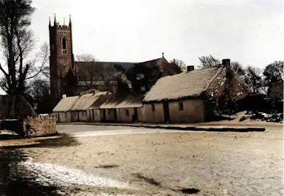
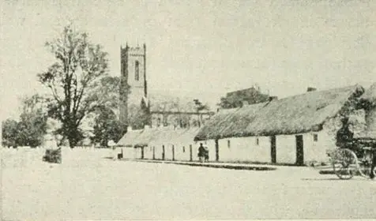
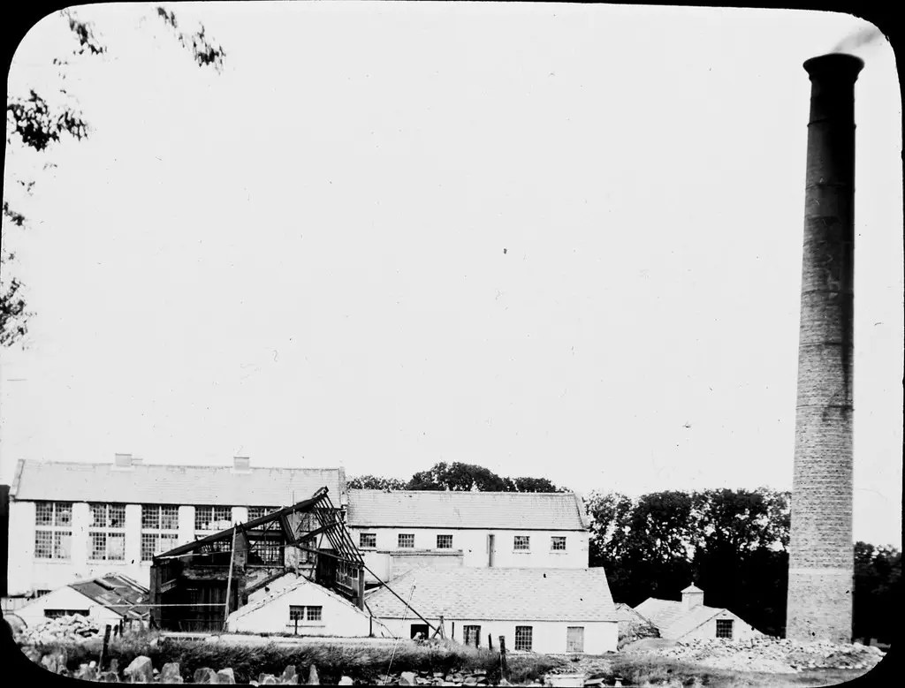
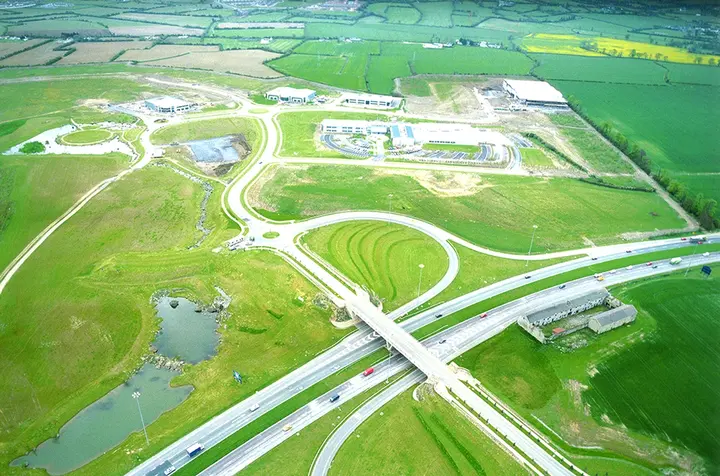
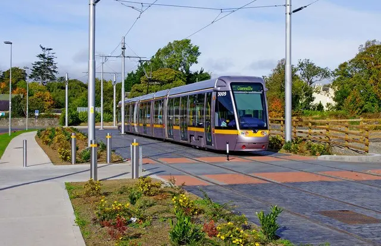

Gallery
Welcome to Saggart & Citywest
A small glimpse of the local area we share.

Discover Saggart
Find out more about the village
Explore visitor information and things to see in Saggart through Dublin’s Outdoors.
Click Here
Local history
A historic view of Saggart
Follow the link to find out more about this historic image and Saggart’s local story.
Click Here
Local history
A view of historic Saggart
Follow the link to find out more about this historic photograph of the village.
Click Here
Local history
A historic local mill
Follow the link to find out more about this historic mill image and the area’s industrial heritage.
Click Here
Citywest then
Before the Luas extension
An early aerial view of Citywest, when the campus was still surrounded by open farmland and its road infrastructure was taking shape.
Image: Citywest Business Campus, Our Story.
Click Here
Citywest now
Infrastructure arrives
A Luas tram at the Saggart terminus, photographed shortly after the Red Line extension opened, connecting Citywest and Saggart with Dublin’s light-rail network.
Photo: P L Chadwick / Geograph Ireland, licensed CC BY-SA 2.0.
Click Here